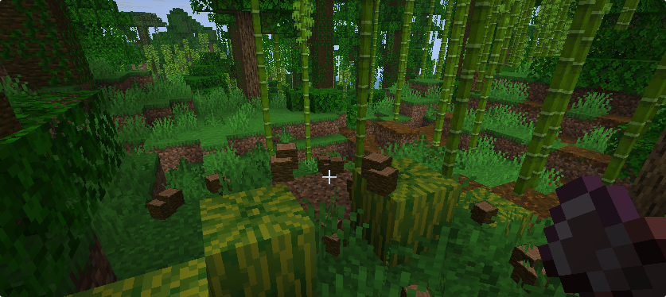

为我的世界1.21.7版本打造的全新Fabric模组，提升你的游戏体验。

这是一个为我的世界1.21.7版本设计的Fabric模组，做到了“无渲染”。
按照以下步骤安装连锁挖掘。
首先，你需要安装Fabric加载器以运行Fabric模组。
下方下载模组。
将下载的模组文件放入Minecraft的mods文件夹中。
一切准备就绪后，启动Minecraft并享受连锁采集带来的全新体验！
注意：确保你使用的是Minecraft 1.21.7版本，并且所有模组都兼容此版本。
获取模组，开始使用。
兼容版本：Minecraft 1.21.7 Fabric加载器1.16.14（部分）
安装连锁挖掘前，你需要先安装以下前置模组：